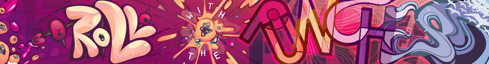
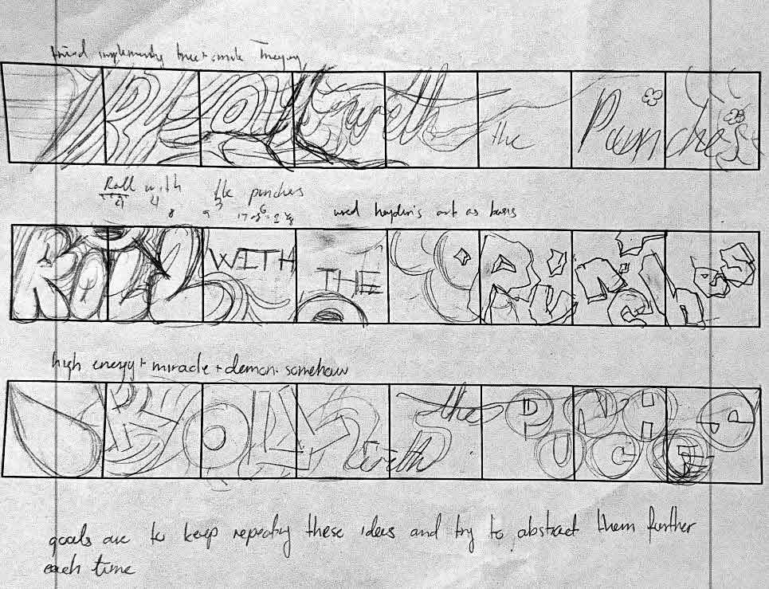
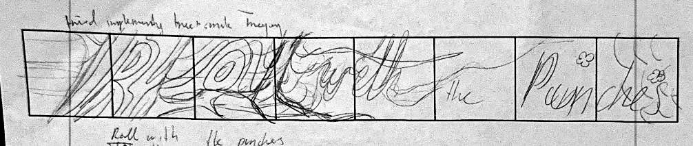
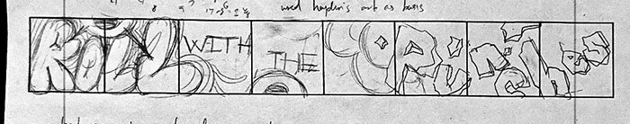
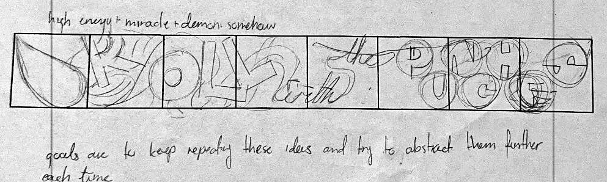
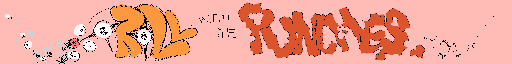
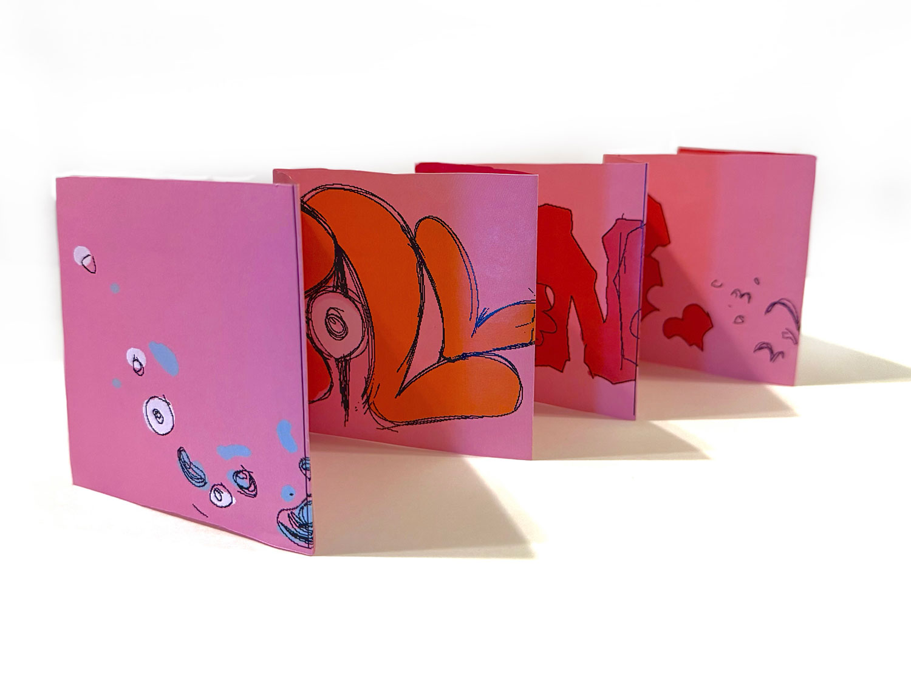
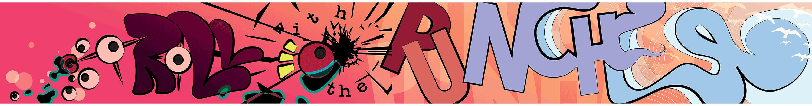

Who Are You? An Exercise in Empathy

For the BA in Graphic Design senior project, we're being taught the "Sea Change" method of designing for clients, which leans heavily on empathy and being one with nature and stuff. Before we got more into the actual Seachange process, though, we were made to practice learning and understanding another person to be able to actualize them into design. It's basically practice for representing clients, I think.
We started by interviewing one of our classmates, asking them a set list of questions (question prompts below; I'm not posting the answers because I still have some integrity left in me) and taking notes.
By the time we finished conducting interviews, we still had no idea what the project actually was, but we quickly learned that we had to use the information given in the interview to create a 32 x 4 inch booklet that represented the other person. With the interviewee being able to see our final work and how we thought of them, this project was super nervewracking, obviously. I barely knew the guy, and now I have to translate their life story into a piece of paper???
I've never been good with typography, so I knew I wanted that part to be the star of the show to push myself. For whatever reason, "Roll with the punches," was a quote that stuck with me (apparently, they didn't even remember saying it, lol), so I started working around that quote.

While many of the examples shown integrated type as a small part of a larger, often illustrative/collage/photographic experience, I wanted the type to be... the entire project, basically, so much of the imagery and symbolism had to be visually shown through the type itself. I tried out some different ideas; I considered using my classmate's artwork as a textural element before realizing I actually had no idea how I'd go about doing that, so I quickly dropped that idea. At the same time, it felt weird to leave the artwork unused, so I decided I'd ought to integrate it somehow stylistically.

This was done in an attempt to lean more into my classmate's home city and the nature around it, but it didn't work out. I couldn't figure out how to draw the bark texture, so what I ended up with were really weird, off-putting textures. There were also attempts at interplay between positive and negative space, but it didn't really pan out the way I'd hoped.

This one was a bit better, though there were still tons of pretty glaring issues. There was a huge balancing issue: the left side was chock-full of positive space, and the spaciousness in the right side felt more awkward than intentional. There was also a lack of clear symbolism. I tried using some of the stylistic "tropes" my classmate used in their artwork: highly stylized, simple shapes and super cartoony characters.
Ultimately, this one's biggest problem was that its meaning was almost entirely derived from information I got outside of the interview, not the interview itself. That was going to be a big pain in the ass moving forward.

Finally, there's this thumbnail. There's honestly not much to say. I was throwing in the towel at this point because I was struggling so hard to collate everything my classmate said into a cohesive piece that also represented my impression of them outside of the interview. I think I was thinking of pinball machines or something working on this?
I ended up going with the second idea. I felt like there was the most going on compositionally, even if not conceptually, and I could find the meaning somewhere along the way... hopefully.
Here are some sketches of "roll." I decided I wanted an almost grafitti-like, skater look to it because my classmate seemed interested in street fashion (no idea if they skate). I also wanted to lean more into something they said regarding their design philosophy and how they felt like restriction strengthened design and creativity. I wanted to have the letters in "roll" literally be formed out of restriction; the eyeball-eyelash-spike-things would jut out in just the right ways to force otherwise amorphous blobs into creating letter and meaning.
Here are some sketches of "punches." I wanted the text to look like bit out apple chunks, but it didn't look very good and didn't hold much meaning, so I eventually dropped it.


Second iteration of the composition. I was satisfied with "roll," but "punches" was extremely difficult for me to visualize. From this sketch, I realized I didn't want it to be too obvious and have "punches" literally look like it was damaged from being punched, but I still wanted the effect of being "punched" visually.

Third iteration. Colors are becoming finalized and so is composition. I decided on vector for the final sketch. Vector allowed for more freedom to move elements around without data loss, and I found certain lineart styles can look even cleaner through vector programs.
In the end, I managed to pull a lot of meaning from the interview. From musical waves to literal waves to represent both my classmate's home city and how they feel "at home" with themselves (lol), plus some implied stuff about their design philosophy in "punches," I don't think I did too shabby.
Since we still have time before the senior project gallery, I intend on continuing to experiment with scale and color. In particular, I want to push value on "punches" more so that its's... punchy. "Roll" is sufficiently punchy; it's just a matter of maintaining that momentum.
Admittedly, it's hard to know when a classmate means what they say since we aren't trained to give harsh critique, but they seemed pretty satisfied with my work, which is all I could ask for.